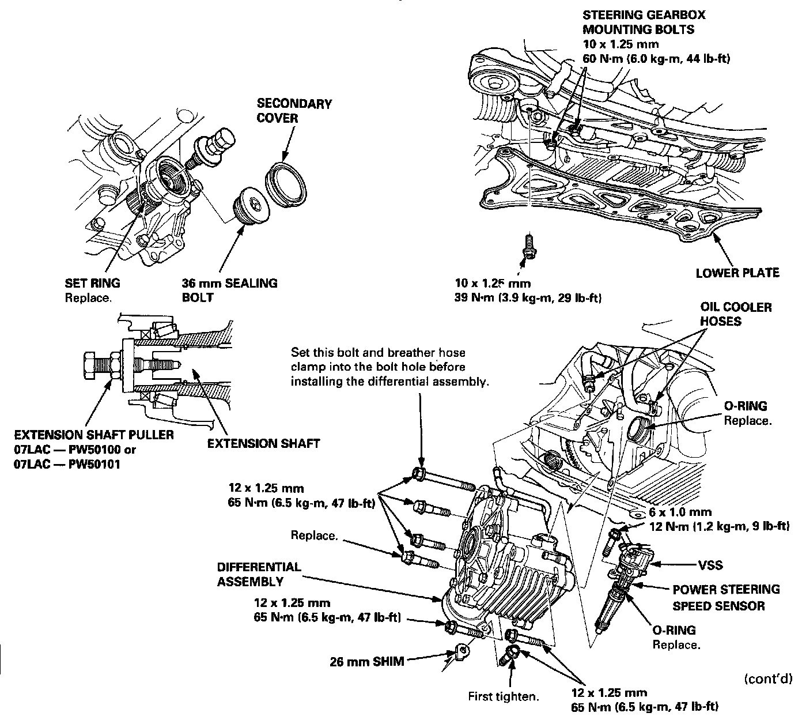
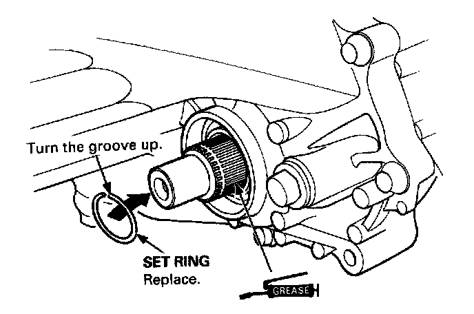
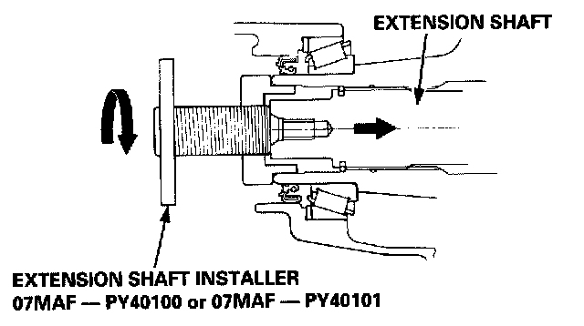
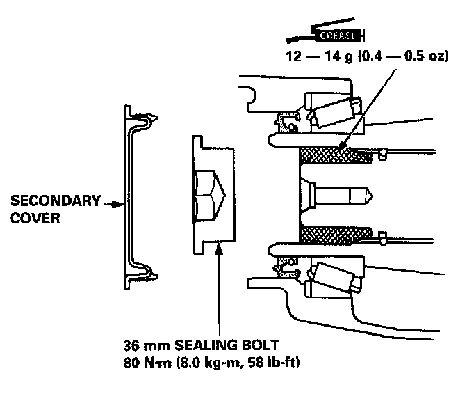
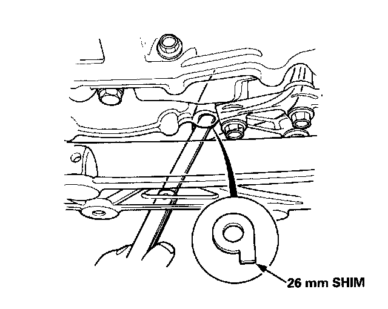
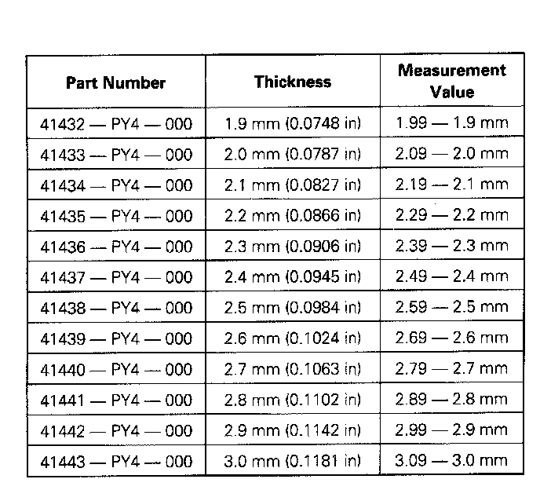

Differential Assembly: Service and Repair

WARNING: Make sure jacks and safety stands are placed properly, and hoist brackets are attached to correct positions on the engine. Apply parking brake and block rear wheels, so car will not roll off stands and fall on you while working under it. Use fender covers to avoid damaging painted surfaces.
1. Drain the engine coolant.
2. Remove drain plug and drain differential oil.
3. Remove the driveshafts and intermediate shaft.
4. Remove the lower plate.
NOTE:Reinstall the steering gearbox mounting bolts.
5. Remove the vehicle speed sensor (VSS)/power steering speed sensor.
NOTE:Do not disconnect the hoses.
6. Disconnect the oil cooler hoses at joint pipes.
7. Remove the secondary cover and 36 mm sealing bolt.
NOTE:Shift to low gear (M/T) or (P) position (NT) to lock the secondary gear.
8. Disconnect the extension shaft from the differential using the special tool.
9. Remove the mounting bolts and 26 mm shim, then remove the differential assembly.
10. Install the differential assembly in the reverse order of removal, and as follows.
EXTENSION SHAFT, 36 mm SEALING BOLT

- 1. Apply Super High Temp Urea Grease (PIN 08798 - 9002) to the splines of the extension shaft, then install the new set ring.

- 2. Install the extension shaft using the special tool as shown.
NOTE:Make sure extension locks in the secondary gear.
- 3. Fill the secondary gear with Super High Temp Urea Grease (P/N 08798-9002)

- 4. Install the 36 mm sealing bolt and secondary cover.
NOTE: Apply liquid gasket (P/N 08718 - 0001) to the 36 mm sealing bolt threads.
ADJUSTING THE 26 mm SHIM
- 1. Install the differential assembly.

- 2. Measure the clearance between the differential case and clutch housing (M/T) or torque converter housing (NT).

- 3. Select shim from the following table.